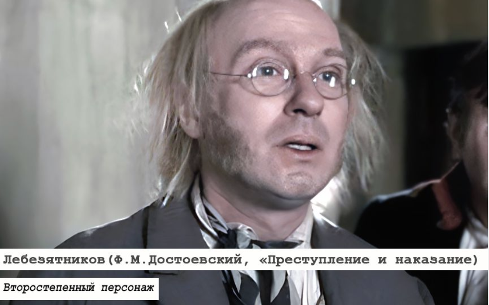
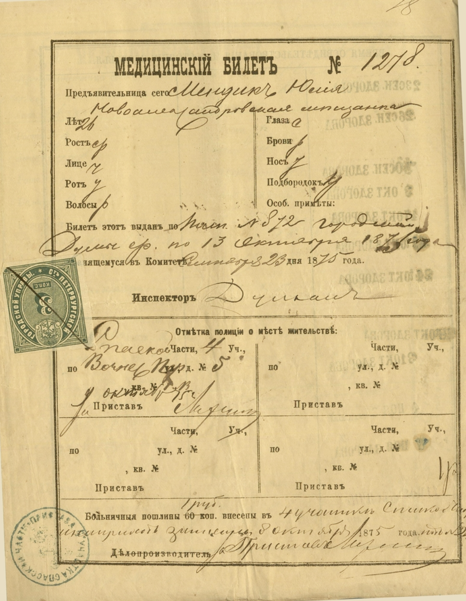

Crime and Punishment. Part V notes
- ch 1 Satire of socialists and atheists
Lebeziatnikov's ideas:
denies family and God,
plans to replace them with socialist commune
communes is the new environment that will remove any causes for crime
sex workers are women who protest social injustice
He respects Sonia for her social protest against social injustice (369)
women will be equal to men in new communities
adultery as a form of poliamory is the new form of social collectivity (365)
chidren do not need to be baptized (365)
art should be socially useful (371)
Lebeziatnikov is presented as a hipocrite: he claims feminism and beats Katerina
Lebeziatnikov is miopic, blind. He sees Luzhin's generosity (he gives 10 rubles and puts 100 in Sonia's pocket). He believes Luzhin is generous.
Sees is in italics (376)
stupid: Lebeziatnikov "respects" Luzhin for his generosity(364-365, 377)

Figure 1. Lebeziatnkov from Crime and Punishment tv-series (Russia 2007)
- Ch. 2 Foreshadowing of the Scandal Scene
and Torment of the Innocent
Funeral meal
"poor man's pride" (378)
insulting Sonia as foreshadowing device: a plate with two hearts (387)
insulting Sonia as foreshadowing device: invoking Sonia's yellow pass

Figure 2. A yellow pass
document of a sex worker in
the Russian Empire between 1843 and 1909.
- ch 3. Scandal Scene: Trial of the Innocent 1.0 (to frame the confession)
Why does Luzhin accuse Sonia of theft?
page 402 R expalins
Lebeziatnkov serves as witness.
miracle of the near-sighted (socialist) witness who acquires perfect vision all of a sudden (398-399)
comic relief: Luzhin says that nobody will believe two atheists (R and L)
Luzhin invokes God indirectly to get away with his slander against Sonia (404)
- ch 4.